MiguelCS · ASIR · NAT y PAT
En esta práctica se configura PAT (Port Address Translation), también conocido como NAT con overload, en dos routers distintos. El objetivo es permitir que múltiples equipos de redes privadas accedan simultáneamente a un mismo servidor externo utilizando una o varias direcciones IP públicas.
En el router R1 se aplica PAT utilizando un pool de direcciones públicas junto con overload, mientras que en el router R2 se configura PAT directamente sobre la interfaz pública del router. De esta forma se compara el funcionamiento de ambas variantes y se observa cómo la traducción diferencia conexiones utilizando puertos TCP de origen.
Se carga el fichero inicial proporcionado en Packet Tracer y se verifica la topología completa del escenario. Se observa la existencia de dos bloques de red privada, uno detrás de R1 (172.16.0.0/16) y otro detrás de R2 (172.17.0.0/16), ambos con acceso a un mismo servidor público.
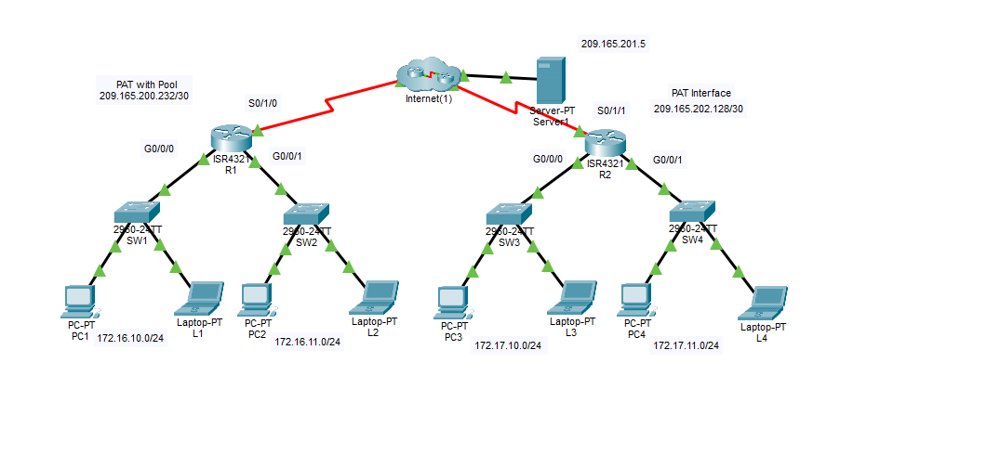
Topología base del ejercicio cargada en Packet Tracer.
Antes de configurar PAT, se prueba el acceso al servidor 209.165.201.5 desde PC1 utilizando el navegador web. El acceso no funciona, ya que la red privada todavía no dispone de traducción NAT/PAT hacia la red pública.
Esto demuestra el estado inicial del ejercicio y justifica la necesidad de configurar traducción de direcciones en el router.
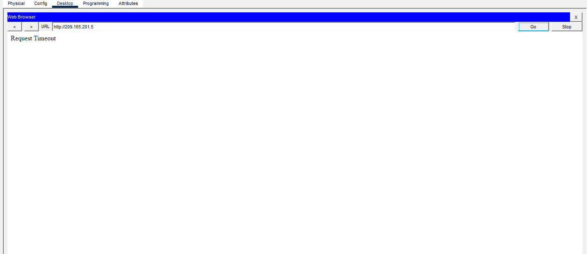
Prueba fallida de acceso al servidor desde PC1 antes de configurar NAT.
En R1 se comprueba que no existe ninguna configuración NAT previa mediante los comandos:
show running-config | include nat
show ip route
show ip nat translations
La tabla NAT aparece vacía, lo que confirma que todavía no se está realizando ninguna traducción de direcciones.
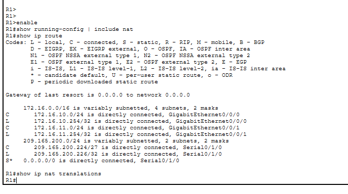
Comprobación inicial en R1 antes de configurar PAT.
Se configura PAT en R1 utilizando una ACL que identifica la red privada 172.16.0.0/16, un pool de dos direcciones públicas y la opción overload, que permite reutilizar las mismas direcciones diferenciando sesiones por puerto.
Configuración aplicada:
access-list 1 permit 172.16.0.0 0.0.255.255
ip nat pool POOL1 209.165.200.233 209.165.200.234 netmask 255.255.255.252
ip nat inside source list 1 pool POOL1 overload
Después se definen las interfaces internas y externas del NAT:
interface s0/1/0 → ip nat outside
interface g0/0/0 → ip nat inside
interface g0/0/1 → ip nat inside
Se verifica la configuración con show running-config | include nat, show access-lists y show ip nat translations.
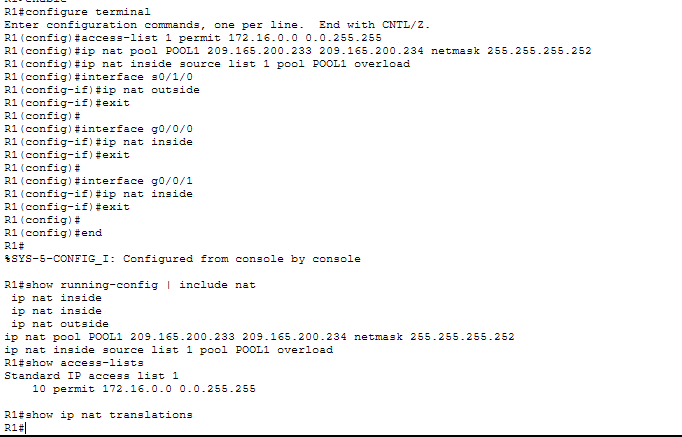
Configuración PAT aplicada correctamente en R1.
Una vez configurado PAT en R1, se prueba de nuevo el acceso al servidor desde PC1. El acceso ahora sí funciona, ya que el router traduce la dirección privada del host a una dirección pública del pool.
Tras la prueba se consulta la tabla NAT, observando la traducción generada para PC1.
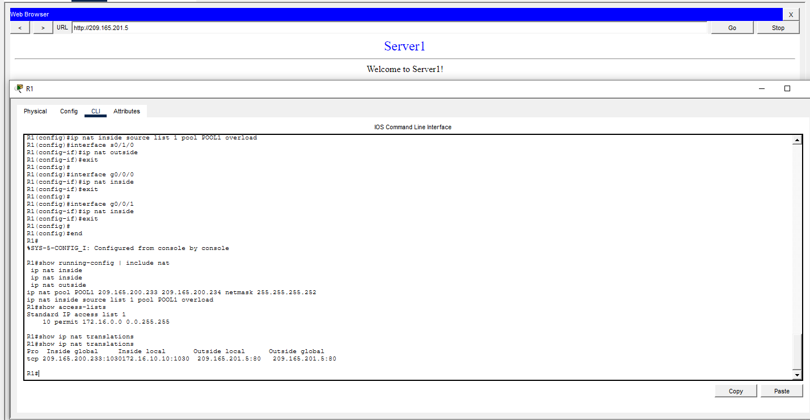
Acceso correcto al servidor desde PC1 con PAT activo en R1.
Se repite la prueba desde L1. La conectividad también funciona y se observa en la tabla NAT una nueva traducción. Aunque varias conexiones puedan compartir la misma IP pública, PAT las diferencia mediante puertos distintos.
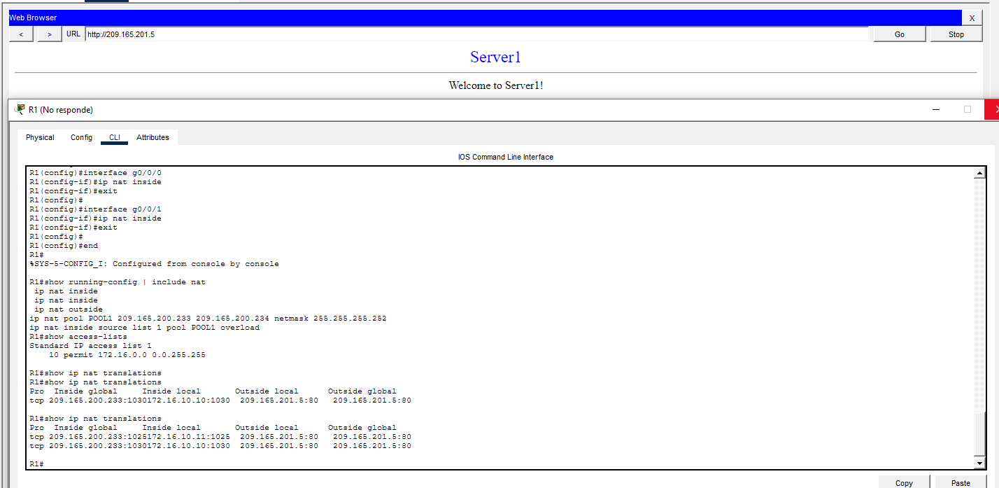
Acceso correcto desde L1 y nueva traducción visible en la tabla NAT.
PC2 accede correctamente al servidor. La tabla NAT sigue creciendo con nuevas entradas, demostrando que varios hosts de la red privada pueden salir simultáneamente utilizando el mecanismo overload.
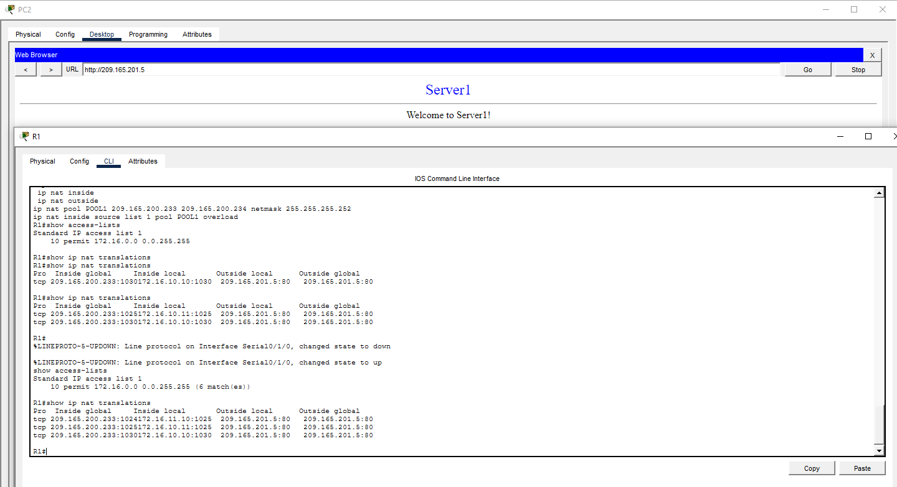
Prueba desde PC2 con traducción PAT activa.
Desde L2 también se logra acceso al servidor externo. Con esta prueba se confirma que PAT en R1 funciona para todos los equipos de la red 172.16.0.0/16.
Respuesta a la pregunta del ejercicio: sí, funciona en todas las pruebas realizadas desde PC1, L1, PC2 y L2.
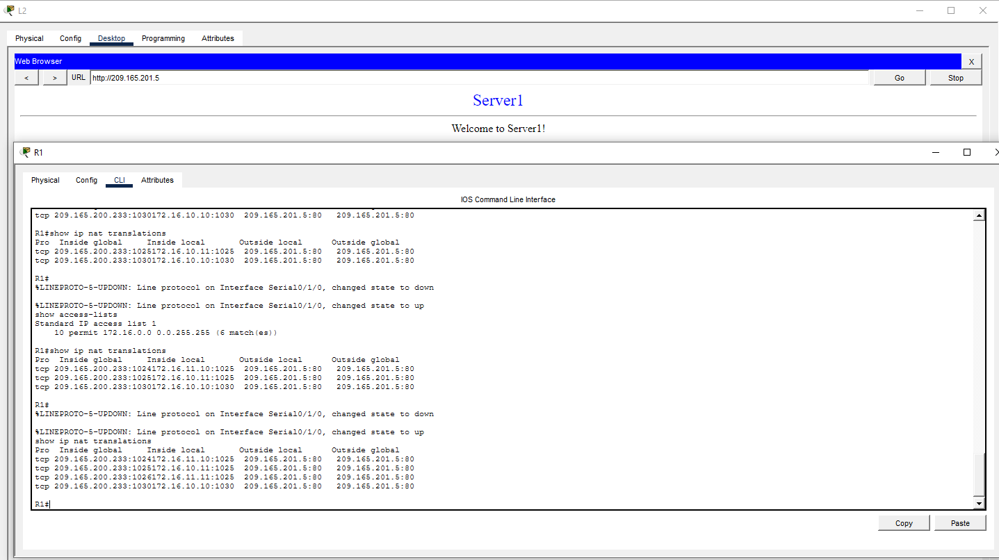
Acceso correcto desde L2; PAT funcionando para todos los equipos del lado de R1.
En R2 se configura PAT por interfaz, es decir, se utiliza directamente la IP pública de su interfaz externa como dirección inside global para todos los hosts de la red 172.17.0.0/16.
Configuración aplicada:
access-list 1 permit 172.17.0.0 0.0.255.255
ip nat inside source list 1 interface s0/1/1 overload
Posteriormente se marcan las interfaces desde el punto de vista del NAT:
interface s0/1/1 → ip nat outside
interface g0/0/1 → ip nat inside
interface g0/0/0 → ip nat inside
Este último punto es importante, ya que el propio enunciado advierte que el alumno debe configurar también como inside la interfaz hacia SW4.
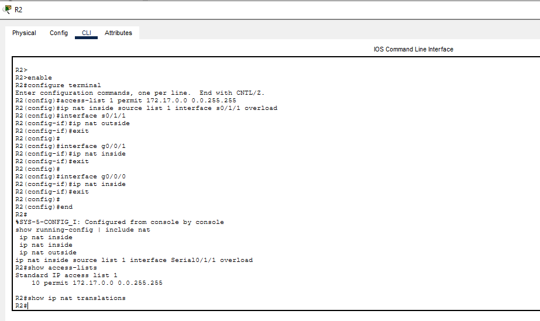
Configuración PAT por interfaz aplicada correctamente en R2.
Tras configurar PAT en R2, se prueba acceso desde PC3. La conexión funciona correctamente y la tabla NAT muestra que la dirección inside global corresponde a la IP pública de la interfaz externa de R2.
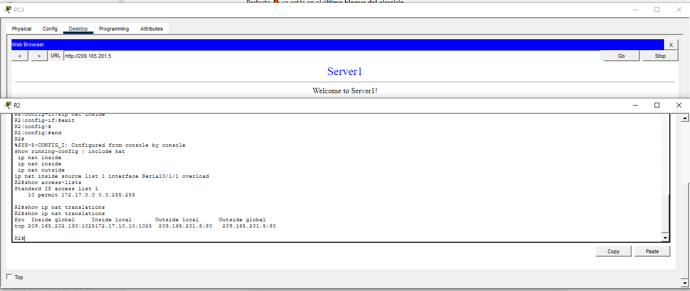
Acceso correcto desde PC3 con PAT configurado en R2.
Se realiza la misma prueba desde L3. El acceso sigue funcionando y se generan nuevas entradas en la tabla NAT, diferenciadas por puertos TCP.
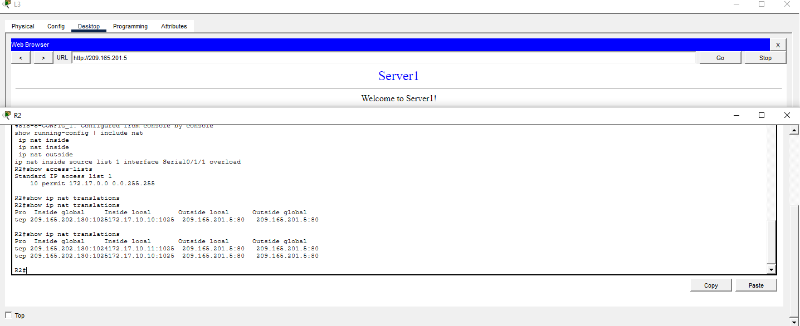
Prueba correcta desde L3 y ampliación de la tabla NAT.
PC4 también consigue conectividad al servidor. Esto confirma que PAT por interfaz permite que múltiples hosts compartan una única IP pública.
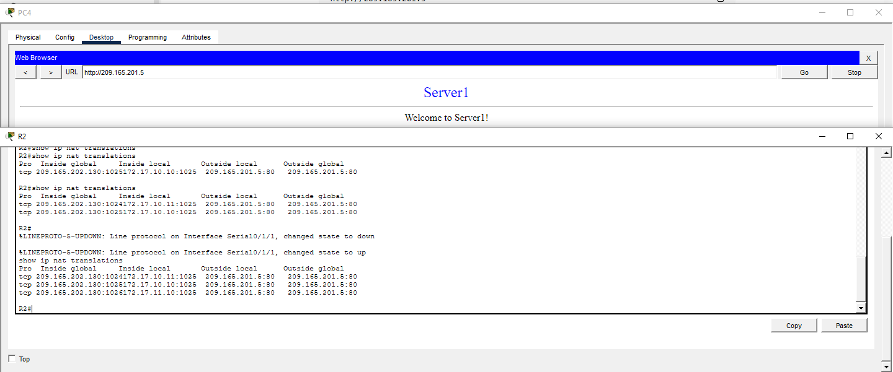
Acceso correcto desde PC4 mediante PAT por interfaz.
Se completa la última prueba desde L4 con resultado satisfactorio. Todas las conexiones desde la red 172.17.0.0/16 funcionan correctamente.
Respuesta a las preguntas del ejercicio:
¿Funciona en todas las pruebas? Sí.
¿Cuál es la dirección inside global que aparece? La IP pública de la interfaz externa de R2, es decir, 209.165.202.130.
¿A qué corresponde esa IP? Corresponde a la interfaz pública del router R2, que se utiliza como dirección global común para todos los hosts gracias a PAT.
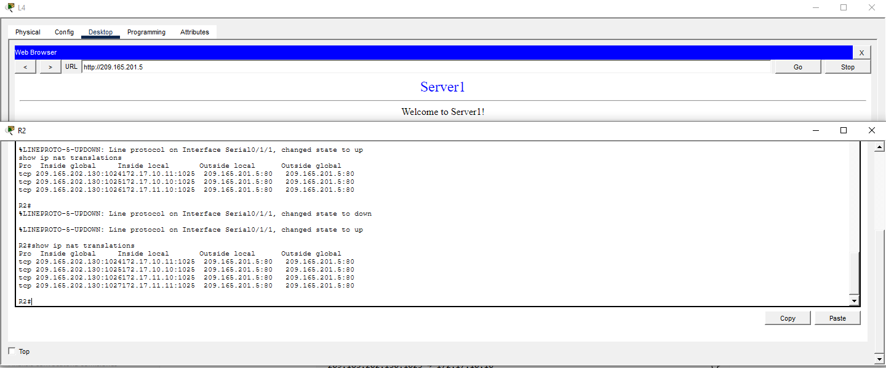
Prueba final desde L4 y confirmación de PAT funcionando en toda la red de R2.
La práctica demuestra el funcionamiento de PAT (Port Address Translation) en dos escenarios distintos. En R1 se aplica PAT utilizando un pool de direcciones públicas más la opción overload, mientras que en R2 se implementa PAT directamente sobre la interfaz pública del router.
En ambos casos, múltiples hosts internos consiguen acceder al mismo servidor público gracias al uso de puertos de origen distintos, lo que permite multiplexar varias conexiones sobre una o varias direcciones IP públicas. Esta técnica es esencial en redes reales para optimizar el uso del direccionamiento IPv4 público.
Además, la práctica permite observar la diferencia entre utilizar un pool de direcciones públicas (R1) y usar una única IP pública asociada a la interfaz del router (R2), comprendiendo así dos variantes habituales de PAT en entornos Cisco.